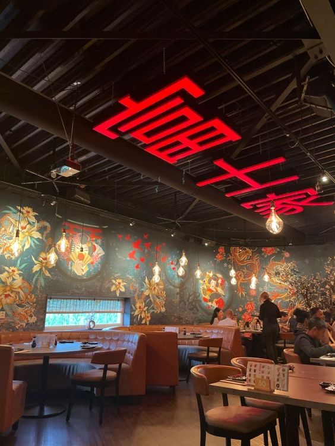
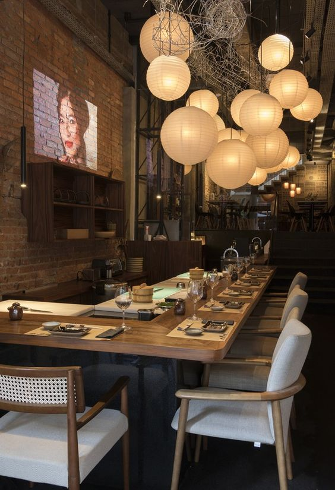
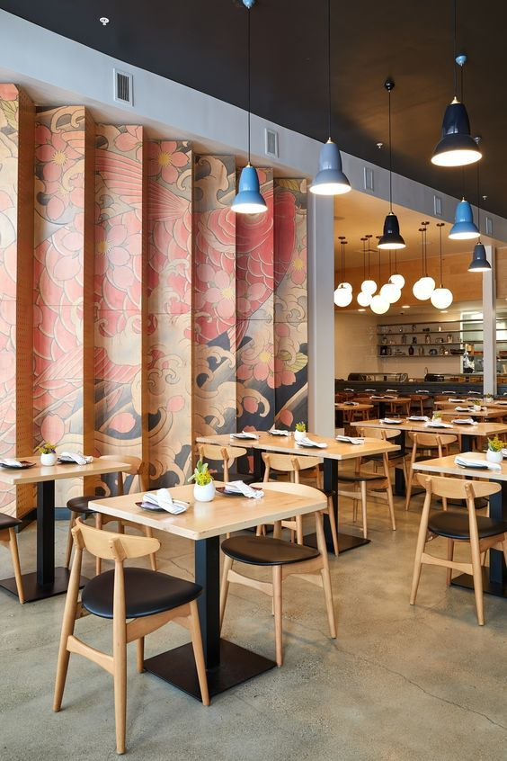

<div class="container">
  <div class="row">
    <div class="col-md-6 order-md-1">
      <div id="carouselExample" class="carousel slide" data-ride="carousel" data-interval="2000">
        <div class="carousel-inner">
          <div class="carousel-item active text-center">
            
          </div>
          <div class="carousel-item text-center">
            
          </div>
          <div class="carousel-item text-center">
            
          </div>
        </div>
      </div>

      <div class="mt-3">
        <h1>Japón: Un Viaje Culinario a la Perfección</h1>
        <p class="mt-3">
          Japón, tierra de contrastes y delicadeza, nos invita a un viaje culinario donde cada bocado es una expresión artística
           y un tributo a la naturaleza.
           En las animadas calles de Tokio y los serenos jardines de Kioto, 
           la cocina japonesa se convierte en una danza delicada de sabores y tradiciones.
        </p>
        <div class="mt-3">
          <a routerLink="/formulario" class="btn btn-outline-secondary">Reservar</a>
        </div>
      </div>
    </div>

    <div class="col-md-6 order-md-2">
      <div class="col-md-6">
        <router-outlet></router-outlet>
      </div>
    </div>
  </div>
</div>
